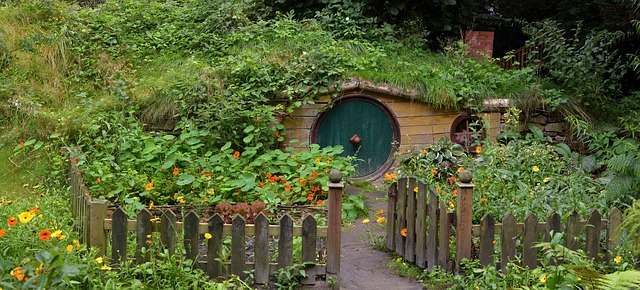
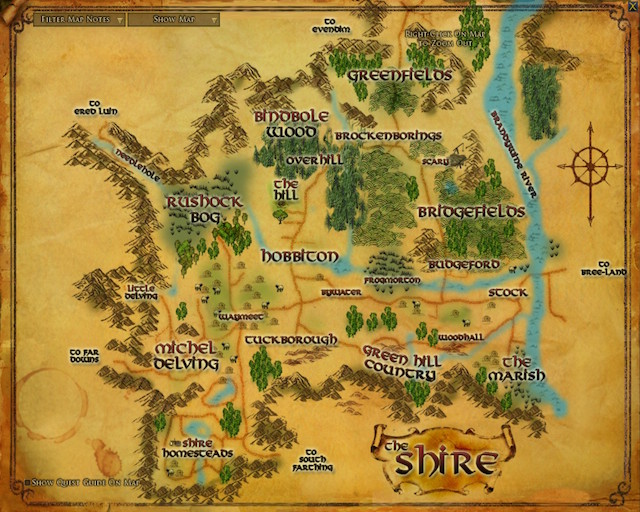
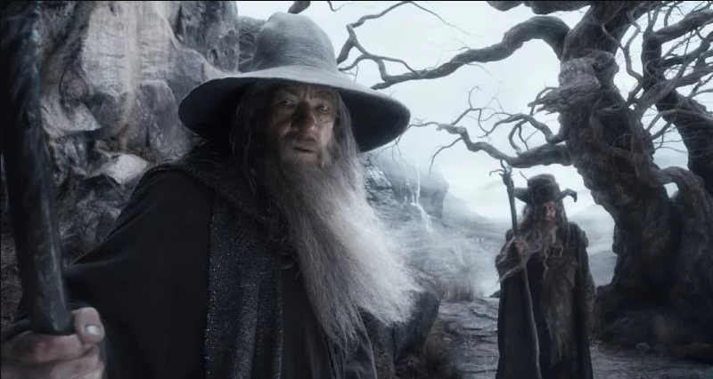

In a hole in the ground lived a hobbit
In a hole in the ground there lived a Hobbit. Not a nasty, dirty, wet hole, filled with the ends of worms and an oozy smell, nor yet a dry, bare, sandy hole with nothing in it to sit down on or to eat: it was a Hobbit-hole, and that means comfort.
Everything you want to know about Bag End

- Bag End
- Shire
The Shire
We are plain quiet folk and have no use for adventures. Nasty disturbing uncomfortable things! Make you late for dinner! I can’t think what anybody sees in them.
Come to the Shire

- Shire
- Bilbo quotes
One ring to rule them all
"I wish the ring had never come to me!" cried Frodo. "So do all who live to see such things," said Gandalf. "But that is not for them to decide. All they have to decide is what to do with the things that have come to them."
The ring calls to you
- Ring
- Frodo
Gandalf
Never meddle with wizards, for you are crunchy, and taste good with ketchup.
Drawn to the wizard
- Wizards
- Gandalf